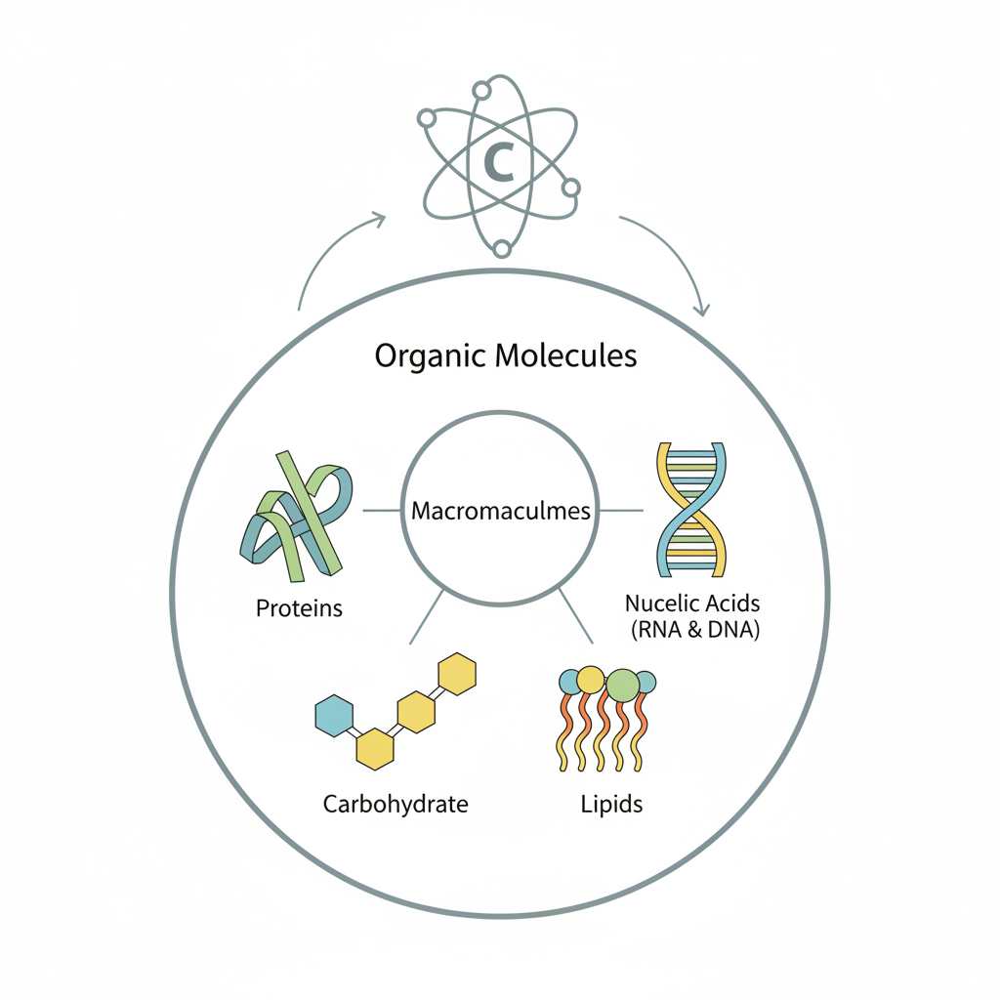
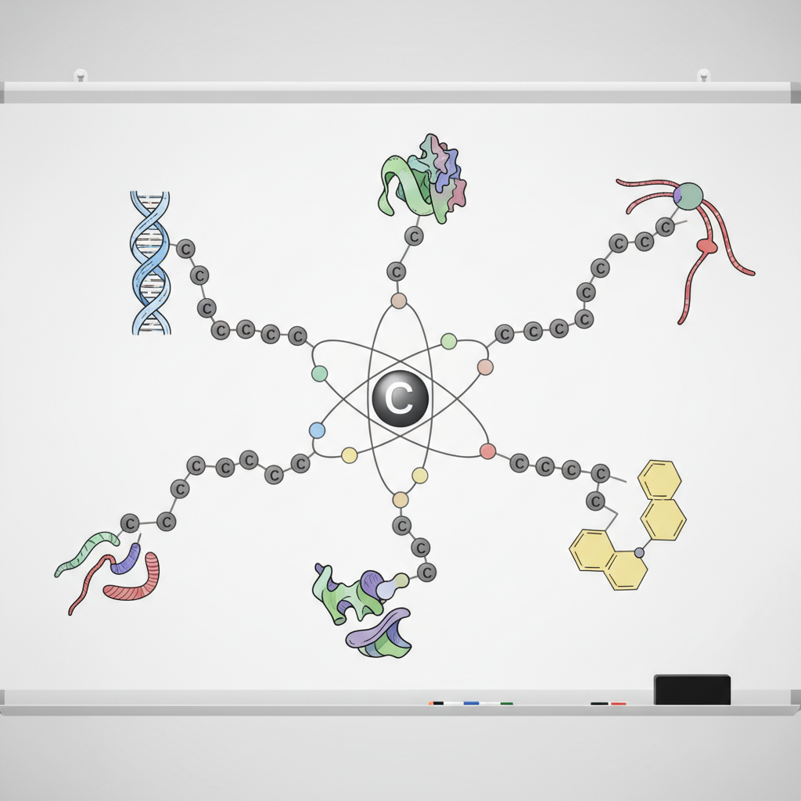
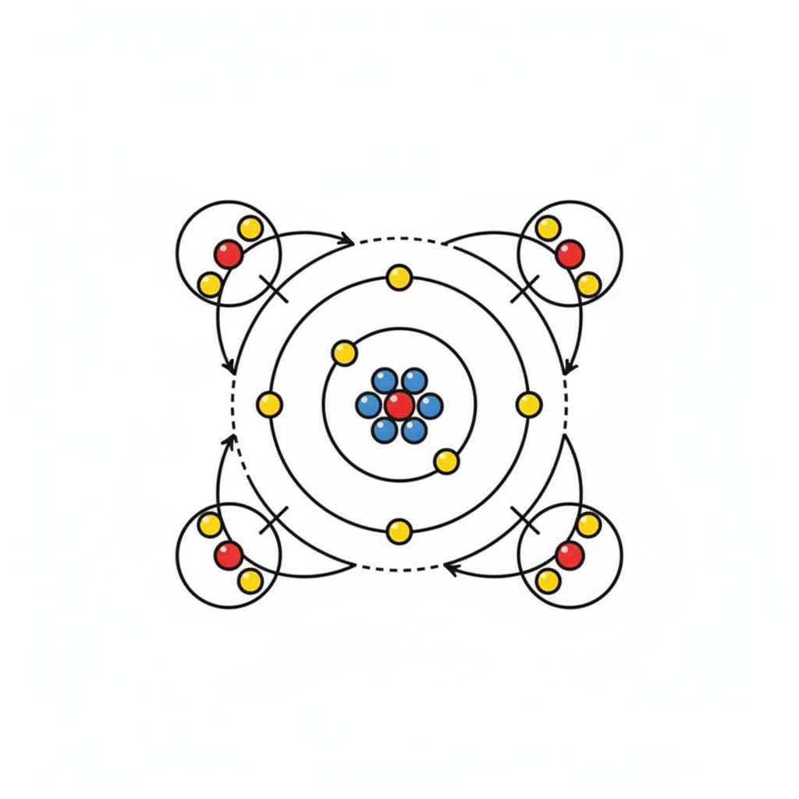

Interactive PDF Lesson Study Kit
Welcome to your generated study kit on the foundational role of Carbon in biological molecules! This page is the central hub for all the content created from your document. Use the links in the sidebar to navigate to the different sections.
Core Content
Deeper Dive
Study Tools
Quizzes
Home > Summary & Key Points
Summary & Key Points

This document introduces the fundamental role of carbon in biological molecules. It explains why carbon is essential for life, highlighting its unique ability to form up to four covalent bonds, making it the "backbone" of complex macromolecules like proteins, nucleic acids, carbohydrates, and lipids.
Here are the top 5 key takeaways:
- Carbon is Fundamental for Life: It is the essential building block for all biological macromolecules.
- Macromolecules are Carbon-Based: Complex molecules crucial for cells (proteins, DNA, etc.) are organic molecules centered around carbon.
- Unique Bonding Properties: Carbon atoms can form up to four covalent bonds, allowing for diverse and stable structures.
- Structural "Backbone": Carbon's versatility makes it the ideal element to form the basic structural framework of macromolecules.
- Octet Rule Satisfaction: Carbon's electron configuration enables it to achieve a full outer shell by forming four bonds, as seen in examples like methane (CH4).
Related Videos to Explore
For the point: Carbon is Fundamental for Life: It is the essential building block for all biological macromolecules.
For the point: Macromolecules are Carbon-Based: Complex molecules crucial for cells (proteins, DNA, etc.) are organic molecules centered around carbon.
For the point: Unique Bonding Properties: Carbon atoms can form up to four covalent bonds, allowing for diverse and stable structures.
For the point: Structural "Backbone": Carbon's versatility makes it the ideal element to form the basic structural framework of macromolecules.
For the point: Octet Rule Satisfaction: Carbon's electron configuration enables it to achieve a full outer shell by forming four bonds, as seen in examples like methane (CH4).
See also: Outline, Glossary
Home > Document Outline
Document Outline
Here's a hierarchical outline of the main topics and sub-topics, structured for easy conversion into a mind map:
- Carbon: The Foundation of Life's Molecules
- Learning Objectives
- Explain Carbon's Importance for Life
- Describe Role of Functional Groups (Note: Content not detailed in snippet)
- Biological Macromolecules
- Definition: Complex molecules comprising cells
- Examples:
- Proteins
- Nucleic Acids (RNA, DNA)
- Carbohydrates
- Lipids
- Relationship to Organic Molecules: Subset of
- Fundamental Component: Carbon
- Organic Molecules
- Definition: Any carbon-containing liquid, solid, or gas
- Importance: Especially important for life
- Unique Properties of Carbon Atoms
- Covalent Bonding Capability
- Forms up to four covalent bonds
- Versatile element for structure
- Serves as the "backbone" of macromolecules
- Electron Configuration
- Atomic Number: 6 (6 electrons, 6 protons)
- Electron Shells:
- Inner shell: 2 electrons (filled)
- Second (outer) shell: 4 electrons (incomplete)
- Goal: Satisfy the Octet Rule
- Example: Methane (CH4)
- Chemical Formula: CH4
- Bonding: Four single covalent bonds with hydrogen atoms
- Result: Filled outermost shell for carbon
- Hydrocarbons (Mentioned as a topic heading, but no specific content provided in this snippet)
For a more detailed explanation, see the Detailed Study Guide.
Home > Detailed Study Guide
Detailed Study Guide
This document serves as an introduction to the pivotal role of carbon in the chemistry of life, laying the groundwork for understanding the complex molecules that constitute living organisms.
1. Learning Objectives
The primary goals outlined in this section are:
- To explain the fundamental importance of carbon for all forms of life.
- To describe the function and significance of functional groups within biological molecules (though the provided text primarily focuses on carbon itself, and not on functional groups).
2. Carbon: The Essential Element for Life's Macromolecules
The central theme of this document is the indispensable nature of carbon in biological systems. Living cells are composed of numerous intricate molecules, many of which are large and complex, known as macromolecules. These include:
- Proteins: Crucial for structure, function, and regulation of the body's tissues and organs.
- Nucleic Acids (RNA and DNA): Carry genetic information.
- Carbohydrates: Provide energy and structural support.
- Lipids: Form cell membranes, store energy, and act as signaling molecules.
All these vital macromolecules are a specific subset of organic molecules, which are broadly defined as any liquid, solid, or gas that contains carbon. The document emphasizes that carbon is the fundamental component, or "backbone," of all these essential macromolecules.
3. The Unique Properties of Carbon Atoms
Carbon's paramount importance stems from its unique atomic structure and bonding capabilities. These properties make it ideally suited to form the vast array of stable and diverse molecules required for life.
3.1. Covalent Bonding Capacity
- Versatile Element: Carbon atoms possess a remarkable ability to form covalent bonds with up to four different atoms simultaneously. This versatility allows carbon to serve as the basic structural framework for complex biological molecules.
- Formation of the "Backbone": Because it can bond with so many other atoms, including other carbon atoms, carbon acts as the "backbone" or skeleton around which larger, more intricate molecules are built.
3.2. Electron Configuration and the Octet Rule
To understand carbon's bonding behavior, we look at its electron configuration:
- Atomic Number 6: A carbon atom has six electrons and six protons.
- Electron Shells:
- The innermost electron shell is filled with two electrons.
- The second, or outermost, shell contains the remaining four electrons.
- Incomplete Outer Shell: With only four electrons in its outer shell, carbon's outermost shell is incomplete. Atoms tend to achieve a stable state by having eight electrons in their outermost shell, a principle known as the octet rule.
- Satisfying the Octet Rule: To fulfill the octet rule, a carbon atom readily forms four covalent bonds. In a covalent bond, atoms share pairs of electrons. By sharing its four outer electrons and gaining access to four shared electrons from other atoms, carbon completes its outer shell with eight electrons.
3.3. Example: Methane (CH4)
The methane molecule (CH4) serves as a classic illustration of carbon's bonding nature:
- A single carbon atom is bonded to four hydrogen atoms.
- Each hydrogen atom forms a single covalent bond with the carbon atom, sharing a pair of electrons.
- This arrangement allows the carbon atom to achieve a filled outermost shell, satisfying the octet rule and forming a stable molecule.
4. Hydrocarbons
The document also mentions "Hydrocarbons" as a topic. While the provided text does not elaborate on them, hydrocarbons are organic molecules composed solely of hydrogen and carbon atoms. They represent some of the simplest organic molecules and are fundamental to understanding more complex biological compounds. The mention implies that this topic would likely be explored further to build upon the foundational understanding of carbon's bonding.
For a guided walk-through of the core topics, see the In-depth Study Path.
See also: Timeline, Applications, Key Terms & Concepts
Home > Glossary of Key Terms
Glossary of Key Terms
Learning Objectives
Goals that state what one will be able to do by the end of the section, such as explaining why carbon is important for life and describing the role of functional groups.
Macromolecules
Many complex molecules that comprise cells, including proteins, nucleic acids (RNA and DNA), carbohydrates, and lipids, which are a subset of organic molecules.
Organic molecules
Any carbon-containing liquid, solid, or gas that is especially important for life.
Carbon
The fundamental component and basic structural 'backbone' for all biological macromolecules, possessing unique properties that allow it to form covalent bonds with up to four different atoms.
Covalent bonds
Bonds that carbon atoms form with other atoms (up to four) by sharing electrons to satisfy the octet rule, due to having an incomplete outermost electron shell.
Octet rule
The principle that carbon atoms satisfy by forming up to four covalent bonds with other atoms, resulting in a filled outermost electron shell.
Methane (CH4)
A molecule with the chemical formula CH4, provided as an example where carbon forms four single covalent bonds with hydrogen atoms, resulting in a filled outermost shell.
Hydrocarbons
A term mentioned as a topic heading in the document, without an explicit definition provided in the given text.
See also: Summary
Home > Timeline of Discoveries
Timeline of Discoveries
1776-1778: Discovery and isolation of methane
1807: Coined the term "organic chemistry"
- By: Jöns Jacob Berzelius
- Source
1828: Synthesis of urea from inorganic compounds, refuting vitalism
1858: Concept of chemical structure and carbon tetravalency developed
- By: Friedrich August Kekulé, Archibald Scott Couper
- Source
1916: Formulation of the octet rule and the concept of covalent bonding
- By: Gilbert N. Lewis, Walther Kossel
- Source
1953: Discovery of the double helix structure of DNA
- By: James Watson, Francis Crick, Maurice Wilkins, Rosalind Franklin
- Source
See also: Detailed Study Guide
Home > Real-World Applications
Real-World Applications
Technology
Carbon fiber composites, utilizing carbon's ability to form strong covalent bonds as a structural backbone, are extensively used in the aerospace and automotive industries to create lightweight yet high-strength components, such as aircraft fuselages, wings, car chassis, and body panels.
Technology
Advanced carbon-based nanomaterials like graphene and carbon nanotubes, which exploit carbon's unique structural properties and versatile bonding, are employed in next-generation electronics (e.g., transistors, flexible electronics) and in enhancing energy storage devices like batteries and supercapacitors due to their exceptional electrical and thermal conductivity.
Medicine
In medicine, carbon fiber, built upon carbon's stable covalent bonds and structural versatility, is integral to durable, lightweight, biocompatible, and radiolucent orthopedic implants (e.g., plates, rods, screws), prosthetics, and patient tables for medical imaging equipment.
Medicine
Carbon-based nanomaterials, such as carbon nanotubes and nanodiamonds, are being developed as advanced drug carriers for targeted therapies like cancer treatment. These materials leverage carbon's versatile bonding and large surface area to improve drug loading and delivery while enhancing biocompatibility.
Engineering
In civil engineering, carbon fiber reinforcing bars and wraps, deriving their strength and corrosion resistance from carbon's strong covalent bonds, are used to strengthen concrete structures and replace traditional steel reinforcement in elements such as columns and bridges.
Daily Life
Hydrocarbons, which are organic molecules with a carbon backbone, serve as fundamental fuel sources in daily life. Examples include natural gas (methane) for heating and cooking, and gasoline for transportation.
Daily Life
Many everyday consumer products, including plastics for packaging, containers, toys, and synthetic fibers for clothing, are made from polymers. These polymers are complex macromolecules whose structural backbone is predominantly composed of strong carbon-carbon bonds, demonstrating carbon's role as a basic structural component.
See also: Detailed Study Guide
Home > Key Terms & Concepts
Key Terms & Concepts
- Learning Objectives
- Explain why carbon is important for life
- Describe the role of functional groups in biological molecules
- Macromolecules
- Examples
- Proteins
- Nucleic Acids
- Carbohydrates
- Lipids
- Relationship to Organic Molecules
- Subset of organic molecules
- Fundamental component
- Organic Molecules
- Definition
- Any carbon-containing liquid, solid, or gas
- Importance
- Especially important for life
- Carbon Atom
- Unique Properties
- Forms covalent bonds to as many as four different atoms
- Versatile element
- Ideal to serve as the basic structural component / 'backbone' of macromolecules
- Atomic Structure and Bonding
- Atomic Number 6
- Six electrons
- Six protons
- Electron Shells
- First two electrons fill inner shell
- Four electrons in second (outermost) shell
- Incomplete outermost electron shell
- Forms up to four covalent bonds with other atoms
- Satisfy the octet rule
- Example: Methane molecule (CH4)
- Chemical formula CH4
- Four hydrogen atoms each form a single covalent bond with carbon
- Sharing a pair of electrons
- Results in a filled outermost shell for carbon
- Hydrocarbons
See also: Detailed Study Guide
Home > In-depth Study Path
In-depth Study Path
This is a guided path through the core concepts of the document. Start with the first topic and follow the links at the bottom of each page to proceed.
See also: Detailed Study Guide
Home > In-depth Study Path > 1. The Building Blocks of Life
1. The Building Blocks of Life: Macromolecules and Organic Chemistry

This segment introduces the fundamental chemical components that make up living cells. Macromolecules are identified as complex molecules crucial for life, including:
- Proteins: Essential for structure and function.
- Nucleic Acids (RNA and DNA): Carry genetic information.
- Carbohydrates: Provide energy and structural support.
- Lipids: Form cell membranes and store energy.
These macromolecules are categorized as a subset of organic molecules, which are broadly defined as any carbon-containing liquid, solid, or gas that is particularly important for life. The overarching theme is that carbon serves as the foundational element for all these vital biological macromolecules.
➡️ Next: 2. Carbon's Central Role: The Versatile Backbone of Life
Home > In-depth Study Path > 2. Carbon's Central Role
2. Carbon's Central Role: The Versatile Backbone of Life

Building upon the introduction of macromolecules, this segment explains why carbon is so crucial. Carbon is presented as the fundamental component for all biological macromolecules. Its significance stems from unique properties, primarily its extraordinary ability to form covalent bonds. A single carbon atom can form covalent bonds with as many as four different atoms simultaneously. This makes carbon an incredibly versatile element, perfectly suited to act as the basic structural component, or 'backbone,' around which complex biological molecules are built. This bonding capability is what allows for the diverse and intricate structures seen in proteins, DNA, carbohydrates, and lipids.
⬅️ Previous: 1. The Building Blocks of Life | ➡️ Next: 3. Atomic Structure of Carbon
Home > In-depth Study Path > 3. Atomic Structure of Carbon
3. Atomic Structure of Carbon and the Octet Rule

This segment delves into the atomic details that explain carbon's bonding behavior. A carbon atom has an atomic number of 6, meaning it contains six electrons and six protons. Its electrons are distributed in shells: the first (inner) shell holds two electrons, while the second (outermost) shell holds the remaining four electrons.
Crucially, this outermost shell is incomplete. Atoms tend to achieve stability by having eight electrons in their outermost shell, a principle known as the octet rule. To satisfy this rule, carbon atoms readily form up to four covalent bonds with other atoms. In a covalent bond, electrons are shared between atoms, allowing carbon to effectively gain access to four additional electrons, thus completing its outer shell.
Methane (CH4) is provided as a clear example: a carbon atom forms a single covalent bond with each of four hydrogen atoms. Through the sharing of electron pairs in these four bonds, the carbon atom successfully achieves a filled outermost shell, demonstrating the octet rule in action.
⬅️ Previous: 2. Carbon's Central Role